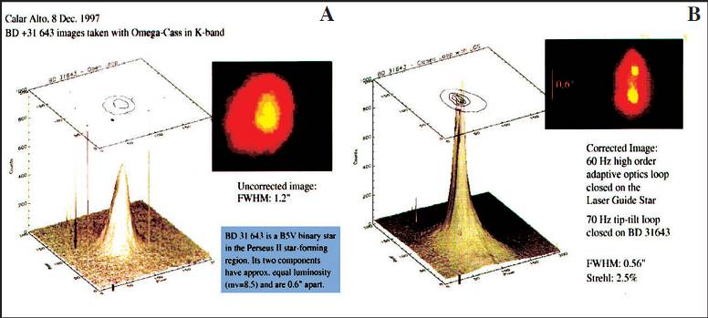

Wavefront
* Định nghĩa:
+ Mặt sóng.
KỶ THUẬT MẶT SÓNG
Cho dù bạn có thể hay không thể tự hiểu về bảng đồ địa hình giác mạc, thế hệ phát triển kế tiếp của hình ảnh khúc xạ nhãn cầu dưới thuật ngữ “Phân tích mặt sóng” đã trở thành một lãnh vực khoa học kỳ thú. Kỷ thuật này dựa trên nền móng của ngành vũ trụ, lĩnh vực mà các nhà du hành vũ trụ hy vọng đạt được sự hoàn hảo với những hình ảnh không hoàn chỉnh từ kính viễn vọng của mình. Để làm việc này những nhà không gian học phải có khả năng đo đạt, let alone, điều chỉnh quang sai bậc cao không hoàn chỉnh hoặc những xoắn vặn mặt sóng đi vào kính viễn vọng của họ từ dải ngân hà. Sử dụng một tiến trình gọi là “Quang chỉnh = Adaptive Optics” những mặt kính có thể thay đổi được sử dụng để khôi phục mặt sóng bị xoắn vặn để cho phép nhìn rõ những vật thể trong không gian. (xem hình).

Hình 1 A & B: (A, trái, trên) ảnh chụp không có quang chỉnh cho thấy những gì xuất hiện là một ngôi sao đơn độc (B, phải, trên) áp dụng kỷ thuật quang chỉnh và khắc phục xoắn vặn mặt sóng thực sự cho thấy hình ảnh hai ngôi sao chứ không phải là một.
.jpg)
Hình 2. Hệ thống gương nhận hình ảnh và gương có thể biến hình quang chỉnh. Hình dưới bên phải cho thấy một một chip thăm dò mảng vi thấu kính để quan sát mặt sóng và hình phải trên là chip gương có thể biến hình để làm cho mặt sóng không hoàn chỉnh trở nên hoàn chỉnh.
Thấu kính và mặt sóng
Giáo sư Josef Bille và những nhà vật lý học trường Đại học Heidelberg, Đức được nhiều người coi là cha đẻ của kỷ thuật mặt sóng. Ông Bille là viện trưởng Viện Vật lý ứng dụng của trường Đại học lần đầu tiên làm việc trong lĩnh vực này trong khi phát triển kỷ thuật cung ứng cho vũ trụ giữa thập niên 1970. Đáng lưu ý, ông là người đầu tiên đã được công bố và nhận bằng sáng chế ở Đức. Năm 1997 ông ta cũng đồng thời khám phá được Perfect Vision 20/10 (thị lực hoàn hảo 20/10). Kể từ đây giáo sư Josef Bille và cộng sự đã thiết kế và đưa ra thị trường một thiết bị thử nghiệm cỡ một chiếc máy tính để bàn độc lập bao gồm: thiết bị thu nhận hình ảnh, màng hình, máy tính và bàn phím. (hình 3)

.jpg)
Hình 3
PHÂN TÍCH MẶT SÓNG
Tạo bảng đồ dữ kiện toàn bộ
Thiết bị nhận dạng mặt sóng tạo ra một cách mới và chủ quan cho việc xây dựng bản đồ dữ liệu về khúc xạ và những quang sai bật cao ở mắt như là cầu sai và coma. Cho dù ghi địa hình giác mạc cho phép chúng ta tạo bản đồ thông tin về bề mặt giác mạc, nhưng bản đồ mặt sóng lại có thể xây dựng dữ kiện của toàn bộ nhãn cầu.
Phân tích mặt sóng là một phương thức đa năng hơn trong việc xác định những quang sai mà phẫu thuật viên cố gắng điều chỉnh qua phẫu thuật khúc xạ (hình 4, 5, 6). Hiện tại thì nền tảng cho chẩn đoán cần thiết vẫn là ghi địa hình giác mạc.
.jpg)
Hình 4- Không có khả năng điều chỉnh quang sai trong điều trị với chùm tia laser rộng – Trước phẫu thuật
Hình ảnh liên quan này cho thấy một giác mạc với vùng điều trị cận thị bằng Lasik và vùng này cũng có một quang sai khu trú. Hầu hết ánh sáng xuyên qua giác mạc hội tụ ở trước (mũi tên xanh) hoàng điểm (M), ở tật khúc xạ cận thị. Ánh sáng xuyên qua một vùng dốc phụ trên giác mạc (mũi tên trắng) làm cho ánh sáng hội tụ hướng ra trước (mũi tên vàng). Quang sai như vậy cũng có thể xảy ra trong mắt ở bất kỳ tổ chức hoặc môi trường trong suốt nào giữa giác mạc và hoàng điểm. (Art from Highlights of Ophthalmology collection of medical illustrations)
.jpg)
Hình 5- Không có khả năng điều chỉnh quang sai với điều trị chùm laser rộng
Chùm laser rộng (L) điều trị một vùng giác mạc lớn mà không quan tâm đến yêu cầu đặc biệt cho việc điều trị có chọn lựa với vùng quang sai (mũi tên trắng). Vì lý do này, quang sai không được loại bỏ, cho một kết quả khúc xạ mà về nguyên lý thì ít tối ưu. (F) Vạt giác mạc được lật lên trong quá trình làm lasik. (Art from Highlights of Ophthalmology collection of medical illustrations).
.jpg)
Hình 6- Máy đo quang sai loại I - Lý thuyết cảm nhận mặt sóng "Outgoing" Đo quang sai phản xạ (Shack Hartmann Device)
Thay vì một khúc xạ trung bình được ghi lại qua giác mạc, phân tích mặt sóng đo khúc xạ ở mỗi vùng của giác mạc. Điều này được kết hợp bởi phân tích và ghi nhận ánh sáng được phản chiếu từ hoàng điểm và khúc xạ ra ngoài của mắt khi xuyên qua mói phần của giác mạc và thể thủy tinh. Trước tiên, một chùm tia laser năng lượng thấp (1-red) được hướng vào mắt. Ánh sáng này phản chiếu lại (2-green) từ hoàng điểm (M) với một số được hướng ngược ra khỏi đồng tử và xuyên qua giác mạc như là một mặt sóng. Ánh sáng phản chiếu trở lại từ hoàng điểm được phân tích về cách nó tạo ra khúc xạ như thế nào khi xuyên qua mỗi phần của giác mạc. Trong ví dụ đơn giản này, một vùng quang sai khu trú (3) gây ra hiện tượng ánh sáng phản chiếu ra ngoài bị lệch khi so sánh tia sáng khi đi qua mỗi phần của giác mạc. Ánh sáng này tiếp theo sẽ đi qua một loạt các thấu kính nhỏ (mảng thấu kính – 4) mà xác định rõ sự lệch những điểm hội tụ từ vị trí lý tưởng. Mẫu mặt sóng, có những độ lệch nổi trội từ quang sai, được ghi nhận (5). Chính thông tin này có thể sử dụng để điều trị khu trú vùng giác mạc với laser điểm nhỏ để tạo được sự điều chỉnh khúc xạ tối ưu. (Art from Highlights of Ophthalmology collection of medical illustrations).
SỰ PHÁT TRIỂN CỦA KỶ THUẬT MẶT SÓNG
Kỷ thuật mặt sóng khởi phát từ hai nguồn chính hơn 100 năm trước. Một nhà vật lý có tên là Hartmann đã phát hiện nguyên lý đo khách quan quang sai bằng phương pháp lặp lại. Hệ thống này về sau được phát triển thành thứ mà được gọi là thiết bị phân tích mặt sóng Hartmann-Shack, ngày nay được sử dụng trong hầu hết các nhà máy (hình 6). Tscherning một nhà Nhãn khoa của những năm cuối thế kỷ 18, đã đưa ra phương pháp khác trong việc tạo bản đồ mặt sóng. Phương pháp Tscherning đã được phát triển xa hơn bởi Howland trong thập niên 70 và gần đây được Theo Seiler điều chỉnh cho ứng dụng lâm sàng, ngay sau đó đã được sự tài trợ của một nhà máy ở Đức (hình 7). Nguyên lý Tscherning cũng ích lợi trong việc quan sát võng mạc được sử dụng với công nghệ Tracey.
Phương pháp thứ 3 được sử dụng bởi nhớm nghiên cứu ở Đại học Emory, Atlanta, Georgia. Nó liên quan với một khúc xạ kế phân giải mà nó đánh giá thông tin mặt sóng bằng cách yêu cầu sự đáp ứng khách quan của bệnh nhân với một loạt tia sáng vào mắt (hình 8). Vẫn còn một phương phát khác về phân tích mặt sóng, mà công ty Nidek sử dụng, nó hoạt động tốt hơn trên những nguyên tắc của soi bóng đồng tử (hình 9).
.jpg)
Hình 7- Máy đo quang sai loại 2 – Lý thuyết nhận
mặt sóng “Ảnh võng mac” (Tscherning Device)
Nhận mặt sóng với ảnh võng mạc, ánh sáng laser (L) dưới dạng ô lưới (B) đi xuyên qua một thấu kính nhận dạng quang sai (A) và những tia laser sắp xếp trên võng mạc (G). Bất kỳ một sự lệch nào khác với tiêu chuẩn việc tính toán dữ kiện quang sai được thực hiện bằng quan sát tia. Ví dụ trên cho thấy, có một quang sai giác mạc (Mũi tên trắng) gây nên lệch hướng khúc xạ ánh sáng laser vào võng mạc. Kết quả về lệch hướng sẽ thấy trên bảng ô lưới và được ghi lại. Thông tin này có thể được sử dụng để điều trị vùng khu trú giác mạc với laser điểm nhỏ để có được điều chỉnh khúc xạ tối ưu hơn (Art from Highlights of Ophthalmology collection of medical illustrations).
.jpg)
Hình 8 – Đo quang sai loại 3 – Lý thuyết nhận
mặt sóng về đo quang sai có thể điều chỉnh
“Ingoing” (Spatially Resolved Refractometer)
Đo quang sai có thể điều chỉnh Ingoing liên quan đến việc ghi những tia sáng đi vào mà được thực hiện bởi bệnh nhân để xác định mặt sóng cần thiết để loại bỏ quang sai nhãn cầu. Trong thí dụ trên, bệnh nhân điều chỉnh những điểm sáng (A) được thấy ở nhiều vùng khác nhau băng qua giác mạc đến hoàng điểm (M). Ở vùng quang sai (mũi tên trắng), bệnh nhân hướng lại một cách khách quan điểm nguồn sáng (B), so sánh về quang sai, cuối cùng ánh sáng rơi đúng lên hoàng điểm. Ghi lại những di lệch này tạo nên một mẫu mặt sóng ở mức giác mạc để chọn lựa điều trị mỗi phần của giác mạc cho kết quả tối ưu hơn. (Art from Highlights of Ophthalmology collection of medical illustrations)
.jpg)
Hình 9 – Đo quang sai loại 4 – Lý thuyết nhận
mặt sóng “Kênh đôi” (Slit Skioloscopy /OPD Scan Devise)
Một khe sáng được quét vào mắt dọc theo một kinh tuyến được cho. Thời gian và tỷ lệ quét của ánh sáng phản chiếu có thể được xác định bởi thiết bị cảm quang để định ra quang sai sóng dọc theo kinh tuyến đó. Nhiều kinh tuyến được quét để phân tích toàn bộ vùng khúc xạ quan đồng tử.
CƠ CHẾ HOẠT ĐỘNG CỦA NHỮNG THIẾT BỊ MẮT SÓNG
Ánh sáng đi vào và đi ra nhãn cầu phải xuyên qua nhiều cấu trúc như là dịch kính, thể thủy tinh và mặt trước, sau của giác mạc. Những sai số bên trong mắt có thể ảnh hưởng đến đường đi của ánh sáng.
Cuối cùng, việc nhận thấy nơi nào nguồn sáng được truyền ra từ mắt trong mối tương quan với giác mạc cho phép bác sỹ nhãn khoa tiên đoán được sự thay đổi hình dạng giác mạc cần cho bệnh nhân sự nhìn hoàn chỉnh (Hình. 6)
Thiết bị mặt sóng có thể phân chia thành 4 nhóm. Với nhóm phân tích mặt sóng “outgoing”, mặt sóng được xác định bởi ánh sáng laser được phản chiếu ngay hoàng điểm ra khỏi mắt. Thiết bị Hartmann Shack dựa trên hình thức phân tích mặt sóng này (hình 6). Thiết bị Tschernig dựa trên phân tích hình ảnh võng mạc. Máy này liên quan với dạng năng lượng laser lưới chiếu vào mắt. Cách thức laser lưới này tách ra khi nó vào mắt và được ghi lại trên võng mạc xác định cho ta một kiểu mẫu mặt sóng. Thiết bị này dùng võng mạc để tạo ra mẫu mặt sóng. Nó đã được phổ biến dưới ảnh hưởng của Dr. Theo Seiler. Phương pháp theo dõi tia võng mạc Tracey phát ra một tia ở cùng một thời điểm mà nó được ghi hình trên võng mạc với hoạt động nhanh (10m/giây). Phương pháp thứ 3 này là cách thức có thể điều chỉnh đường vào trong việc xác định bảng ghi mặt sóng (hình 8). Nó đo những tia sáng đi vào, được bệnh nhân điều chỉnh bằng tay đạt được định thị võng mạc trung tâm. Phương pháp cuối cùng sử dụng hành trình đôi (vào và ra) trong việc phân tích mặt sóng bằng khe soi bóng đồng tử, áp dụng nguyên lý soi võng mạc. Máy quét OPD của NIDEK sử dụng cơ chế hoạt động này (hình 9).
LỢI ÍCH CỦA PHÂN TÍCH MẶT SÓNG
Có lẽ sự giống nhau nhất của sự phát triển kỷ thuật mặt sóng liên quan với những ngày đầu của kỷ thuật rạch giác mạc nang hoa trong phẫu thuật khúc xạ. Vào thời điểm đó, trước thời đại của địa hình giác mạc, tất cả các phẫu thuật viên đã biết giá trị đo khúc xạ giác mạc và những con số chắc chắn khác về hình dạng giác mạc. Sự kiện phát hiện về ghi địa hình giác mạc cho phép chúng ta lập bản đồ toàn bộ thông tin về hình dạng giác mạc, mang lại chúng ta nhiều thông tin hơn cho chẩn đoán.
Bệnh nhân với khúc xạ trụ cầu, chúng ta sử dụng laser điều chỉnh sai lệch khúc xạ cầu, trụ và trục. Nhưng chúng chỉ là 3 con số, với đo khúc xạ giác mạc chỉ được xác định vài con số. Mục đích của chúng ta là có được toàn bộ dữ kiện về khúc xạ, với một giá trị cân bằng ở mọi điểm qua lỗ đồng tử. Một khi có được những thông tin này, bác sỹ nhãn khoa có thể sử dụng laser để tạo nên một bề mặt quang học hoàn chỉnh.
Công nghệ mặt sóng đảm nhận chức năng như là một bảng chỉ đường cho phẫu thẫu Lasik, tạo ra ích lợi cho bệnh nhân cả trong đánh giá trước phẫu thuật và trong khi điều trị. Trong quá trình đánh giá bệnh nhân, mặt sóng cung cấp cho bác sỹ thông tin chẩn đoán từng cá nhân hoàn chỉnh, mà không có ở những công nghệ trước đó. Vì vậy, trước khi phẫu thuật, phẫu thuật viên có khả năng tốt hơn để xác định phương pháp điều trị thích hợp. Trong khi điều trị, mặt sóng cho phép phẫu thuật viên điều chỉnh thích hợp chùm laser, làm cho cuộc phẫu thuật chính xác hơn. Bằng cách này, công nghệ mặt sóng giúp cho bệnh nhân có được hình ảnh rõ, sắc nét, chất lượng thị giác tốt hơn, cũng như giảm đi những khó khăn với thị giác ban đêm, như là quầng sáng và lóa.
BS Hoàng Chí Tâm